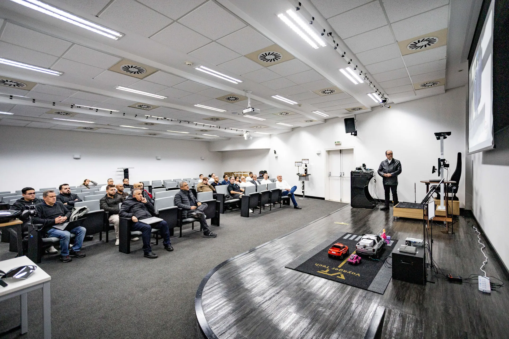
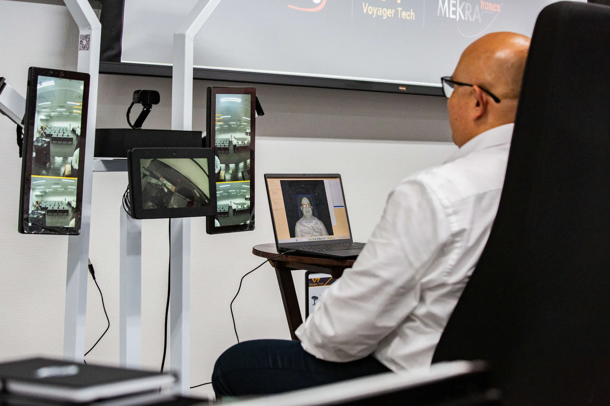
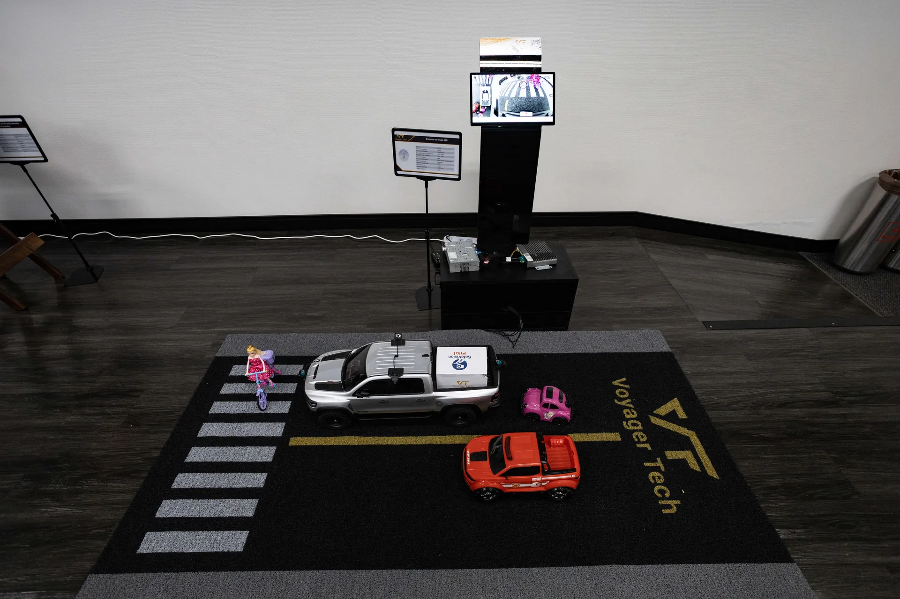
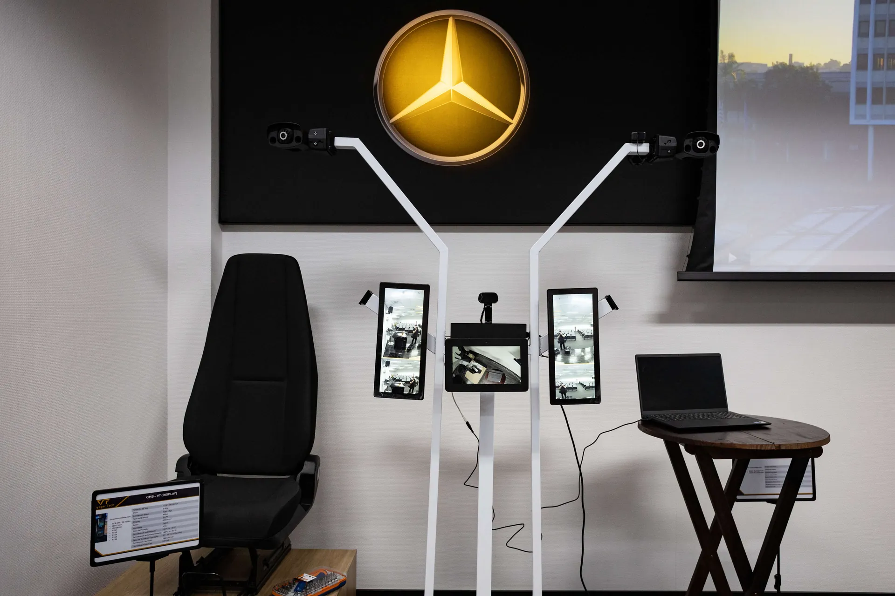
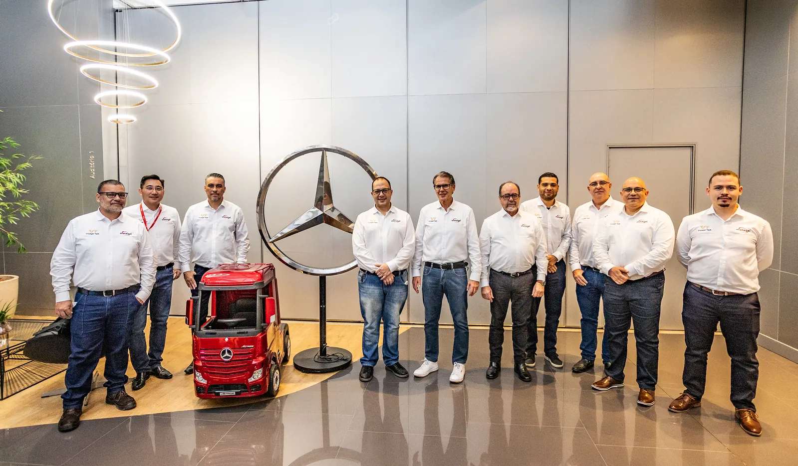

Joining hands with local strategic partners MEKRA Lang do Brasiland Metagal Industria e Comércio, Voyager Tech made a remarkable appearance at the Mercedes-Benz Tech Day, accelerating its in-depth market layout in South America and showcasing outstanding technological strength in the global commercial vehicle intelligent upgrade track.

At this event, Voyager Tech showcased its full lineup of mature, mass-production-oriented intelligent driving solutions for commercial vehicles. Powered by its core technologies including VT-Sensing, VT-Navi and VT-Vulcan® technologies, the company demonstrated a series of solutions covering VT- Camera Monitor System, VT-Driver Monitor System, VT-Around View Monitor and VT-Front View Camera Integrated ADAS System. Voyager Tech’s solutions are capable of complying with South America’s strict commercial vehicle safety standards, with localized hardware and algorithm optimizations for high temperatures, long-range use and complex road conditions.



As an important part of long-term strategic cooperation, Voyager Tech and MEKRA Langhave established a global strategic partnership since 2024, committed to jointly expanding high-quality commercial vehicle intelligent solution business and exploring innovative application scenarios for the global commercial vehicle market. Since 2024, both parties have deepened localized cooperation in Brazil. Teaming up with local Tier 1 supplier Metagal Industria e Comércio, they steadily advance market penetration, technical alignment and project implementation, laying a solid foundation for Voyager Tech’s in-depth expansion into the South American commercial vehicle market.
With more than a decade of extensive experience in automotive smart sensing, intelligent decision-making and control, Voyager Tech boasts mature mass-production deployment capabilities and well-proven practical expertise in the commercial vehicle sector. In Q1 2026, Voyager Tech secured a project designation from Chery Commercial Vehicles.
Brian CHEN, the Founder and CEO of Voyager Tech shared his view: ‘The South American market is a key strategic hub for Voyager Tech’s global commercial vehicle business layout. We would like to express our sincere gratitude to MEKRA Lang, our long-term global strategic partner, and Metagal Industria e Comércio, a local Brazilian Tier 1 supplier, for their generous support and in-depth collaboration. Built jointly with our partners, our mature localized support system delivers full-chain services including dedicated customer liaison, application engineering development, warranty and maintenance, spare parts supply and on-site technical assistance, enabling us to steadily expand our presence and roll out technologies across Brazil.
Our attendance at the Daimler Brazil Tech Exchange Day is far more than a plain display of individual products; it is a comprehensive showcase of our end-to-end solution portfolio covering three major segments: first, self-developed core technologies for commercial vehicle intelligent sensing, decision-making and control; second, full-lifecycle localized supporting services and proven vehicle application engineering expertise; third, local industrial chain collaboration and frameworks for long-term joint technical innovation. Our highly customizable, flexible solutions can fully accommodate OEM-specific requirements, regional localization adaptations and upcoming industry regulatory trends.
Going forward, we are confident that as a trusted Chinese technology provider, we will keep supplying high-standard intelligent mobility products and localized services, and empower the global commercial vehicle industry to advance toward greater intelligence and higher safety benchmarks.’
